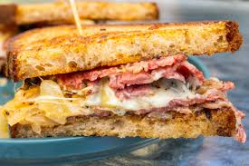
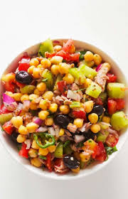

Indian paratha
Indian Paratha
| Prep Time | 15 mins |
|---|
| Cook Time | 10 mins |
|---|
| Servings | 2 |
|---|
| Difficulty | Easy |
|---|
Ingredients
- Whole wheat flour
- Water
- Salt
- Ghee or oil
- Stuffing (optional)
Steps
- Mix whole wheat flour, water, and salt to form a dough. Knead until smooth.
- Divide the dough into small balls and roll them out into circles.
- If using stuffing, place it in the center of the circle and fold the edges to seal it.
- Cook the paratha on a hot griddle, applying ghee or oil until both sides are golden brown.
- Serve hot with yogurt or pickles.
Chef Tip: Rest dough 15 minutes for softer parathas.
Japanese sushi
Classic Japanese sushi
| Prep Time | 20 mins |
|---|
| Cook Time | 10 mins |
|---|
| Servings | 2 |
|---|
| Difficulty | Hard |
|---|
Ingredients
- Sushi rice
- Nori sheets
- Fresh fish or vegetables
- Soy sauce
- Wasabi
- Pickled ginger
Steps
- Cook sushi rice and let it cool.
- Place a nori sheet on a bamboo mat, spread a thin layer of rice over it.
- Add fresh fish or vegetables on top of the rice.
- Roll the sushi tightly using the bamboo mat.
- Slice the roll into bite-sized pieces and serve with soy sauce, wasabi, and pickled ginger.
Italian pasta
 Italian pasta salad
Italian pasta salad
| Prep Time | 15 mins |
|---|
| Cook Time | 10 mins |
|---|
| Servings | 2 |
|---|
| Difficulty | Easy |
|---|
Ingredients
- Pasta
- Tomato sauce
- Garlic
- Olive oil
- Basil
- Salt
- herbs
Steps
- Cook pasta according to package instructions.
- Heat olive oil in a pan and sauté garlic until fragrant.
- Add tomato sauce and basil, simmer for 5 minutes.
- Combine cooked pasta with the sauce and herbs.
Chicken biriyani
 Royal dum biriyani
Royal dum biriyani
| Prep Time | 30 mins |
|---|
| Cook Time | 40 mins |
|---|
| Servings | 4 |
|---|
| Difficulty | Medium |
|---|
Ingredients
- Chicken
- Rice
- Onions
- Yogurt
- Spices
- Cilantro
Steps
- Marinate chicken with yogurt and spices for at least 1 hour.
- Cook rice until partially done and set aside.
- Sauté onions until golden brown, then add marinated chicken and cook until done.
- Layer the chicken and rice in a pot, cover, and cook on low heat for 20 minutes.
- Garnish with cilantro before serving.
American sandwich

American sandwich
| Prep Time | 10 mins |
|---|
| Cook Time | 5 mins |
|---|
| Servings | 2 |
|---|
| Difficulty | Easy |
|---|
Ingredients
- Bread
- Deli meat or vegetables
- Cheese
- Condiments
- Lettuce and tomato
Steps
- Layer deli meat or vegetables, cheese, lettuce, and tomato between slices of bread.
- Add condiments of your choice (e.g., mayonnaise, mustard).
- Close the sandwich and cut it in half if desired.
- Serve with chips or a side salad.
Healthy salad

Healthy salad
| Prep Time | 15 mins |
|---|
| Cook Time | 0 mins |
|---|
| Servings | 2 |
|---|
| Difficulty | Easy |
|---|
Ingredients
- Mixed greens
- Cherry tomatoes
- Cucumbers
- Avocado
- Feta cheese
- Olive oil and vinegar dressing
Special note: Avoid adding sugar for health benefits.
Steps
- Combine mixed greens, cherry tomatoes, cucumbers, avocado, and feta cheese in a large bowl.
- Drizzle with olive oil and vinegar dressing.
- Toss the salad to evenly coat the ingredients with the dressing.
- Serve immediately for a fresh and healthy meal.